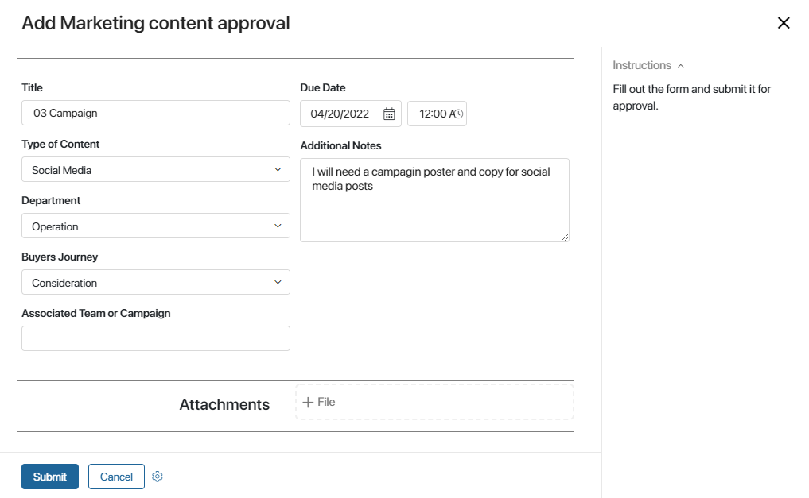
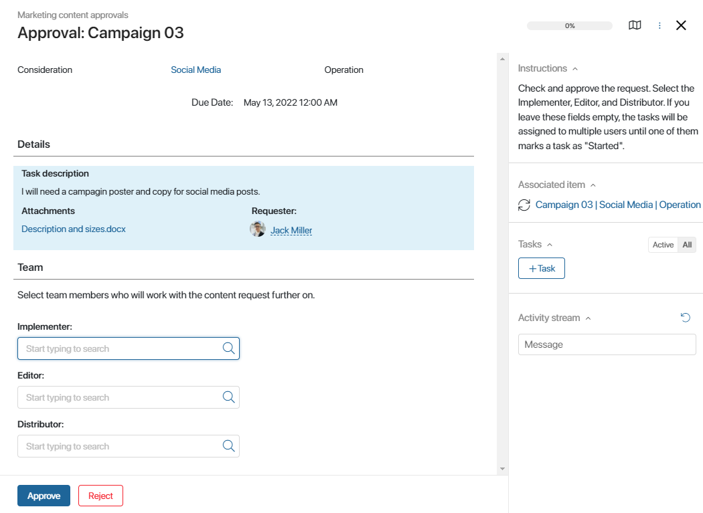
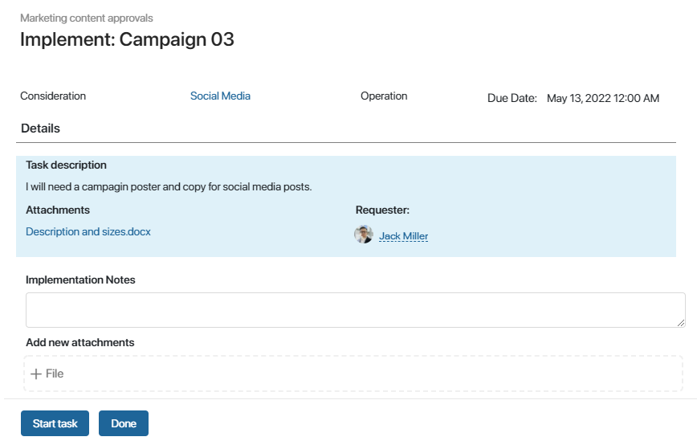
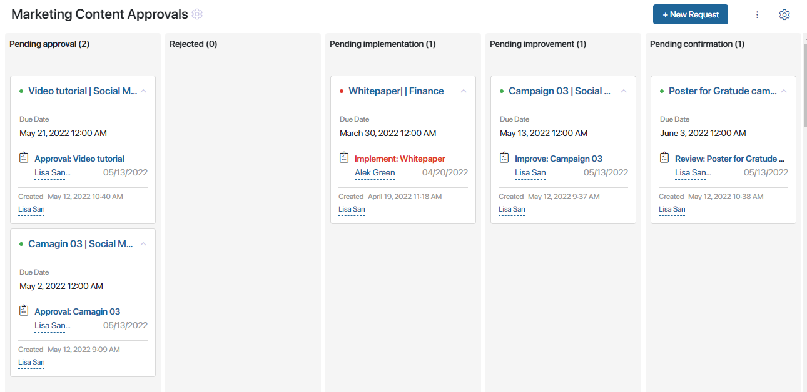

The Marketing solution is intended for automating the entire process of working with marketing content, from creation to storage. It coordinates the work of marketers, creators, and approvers in a seamless workflow.
The solution consists of the Marketing content approvals app with preset filters for convenient display of content requests, and the Types of Content catalog.
When a new request is created, a preset business process starts. The request is routed from one employee to another according to the workflow.
Initial setup of the solution
- Import the solution from BRIX Store or upload the .e365 file to the system.
- During the import, you will be prompted to select users for each role configured in the workspace. If you didn’t do it right away, you can do it later: click the gear icon next to the workspace’s name and select Groups. Here you can set up the roles and assign them to user. Make sure to do it before starting to use the solution. The following roles are used in the Marketing workspace:
- Requester. Employee who can create new content requests and submit them for approval;
- Approver. Approves new content requests;
- Implementer. Content creator who creates marketing assets (writes copy, creates infographics, makes videos, etc);
- Editor. Checks the created marketing assets. If necessary, sends them back to the creator for rework;
- Distributor. Distributes the created content (posts on social media, sends newsletters, distributes printed ads, etc.)
- Add appropriate items to the Types of Content catalog. To do that, open the catalog and click +Type of Content. These types are used in the Marketing content approval process. An employee makes a request for a marketing asset and specifies what type of content they need: a video, a social media post, infographics, etc.
Overview of the content request process
When a new request is created, it is saved and automatically submitted for approval. An approved request is routed to the content creator, who creates marketing assets according to the specified details. After the marketing assets are created, they are routed to the editor. The editor reviews them and either accepts them or sends them back to be reworked.
When the content is finally created, the request is routed to the distributor. The distributor is in charge of delivering the created content to the stakeholders, suppliers, and clients.
Below you will find a description of each step of the process.
Step 1. Add a New Request
When adding a new request, fill out all the required fields: Title, Type of Content, Department, Buyer's Journey, Due Date, Attachments.

Then click Submit the form to start the process and send the request for approval. Also, you can Cancel creating the request. The changes that you have made to the form will not be saved.
Step 2. Approval
This task is automatically assigned to all the users included in the Approver role, and the First Response rule is applied. This means that whoever clicks the Start Task button first, is appointed as task executor.
At this step, the approver considers if the request can be approved and routed further.
On the task form, he or she can also specify the people who will create, review and publish the content on the following steps of the process. To do that, fill in the Implementer, Editor, and Distributor fields. If you leave them empty, the tasks will be automatically assigned to all the users belonging to these roles, and the First Response rule will be applied as described above.

Step 3. Edit
If the the original request lacks some details and is rejected by the approver, the requester can make the necessary changes right on the request form.
Click Edited to resubmit the revised request for approval. Also, you can click Cancel to interrupt the process. All the data entered before this step will be saved. The item's status will change to "Cancelled by requester".
Step 4. Execute
At this step, the content creator produces marketing assets according to the requirements specified in the request. The produced files (texts, images, videos, etc.) are attached to the form.
начало внимание
If the approver did not specify the Implementer, this task is assigned to all the users who belong to the Implementer role. Click on the Start Task button to assign the task to yourself. This is also true for the Editor and Distributor tasks.
конец внимание

Step 5. Review Marketing Assets
The editor reviews the created marketing assets and checks such things as size requirements, brand colors, style elements, etc.
To accept the created content and route it for distribution, click Confirm. To send the task back to the content creator, click Rework and specify what has to be corrected.
Step 6. Improve
If the content is sent back to the creator, it has to be edited and improved according to the reviewer's notes. The creator then attaches the new improved files, adds a description if necessary, and resubmits the content.
Step 7. Distribution
At this step, the approved marketing assets are finally released: sent to the customers, posted online, printed out, published, etc.
Click Complete to end the process.
Preset filters
Since the Marketing requests approvals app has pre-configured statuses, you can easily track the progress of requests. The Kanban board shows how many requests are currently pending approval, being reviewed by the editor, etc. All the overdue tasks are highlighted red.

Also, there the All items and My requests filters in the app menu that help sort items conveniently.
Found a typo? Select it and press Ctrl+Enter to send us feedback